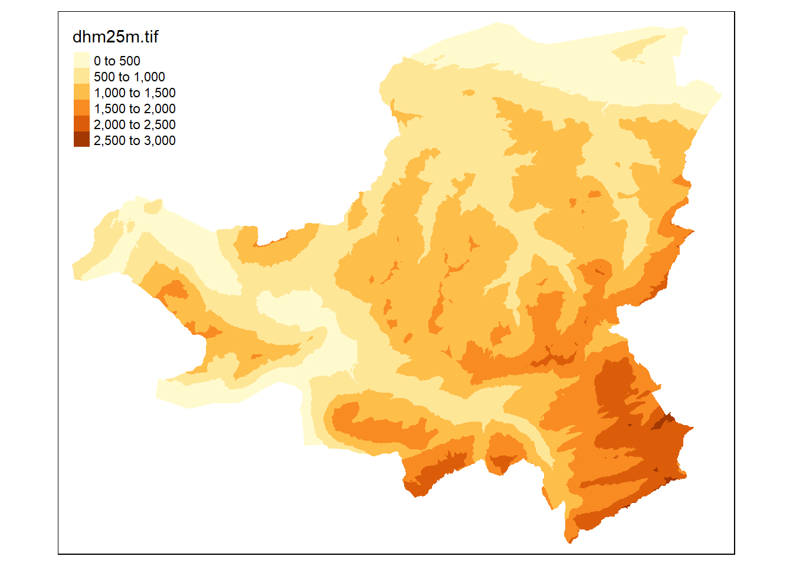
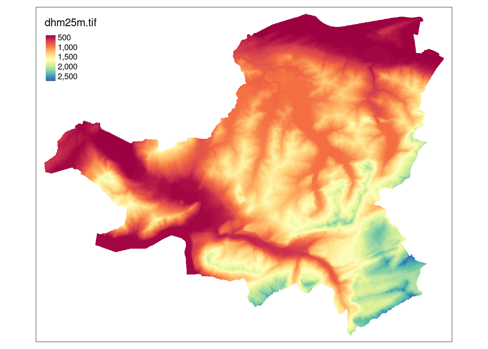

Rauman 4: Übung B
One of the important aspects of the upcoming exercise (Multi-Criteria Evaluation (MCE)) is the use and manipulation of raster datasets. In R, two are the main packages used to handle raster data: terra and raster package. The latter is still heavily used, but inevitably is going to be replaced by the first one.
Below we will use terra to demonstrate how we can import a raster dataset. In the link below you can download a tif file, representing the Digital Elevation Model (Digitales Höhenmodell, DHM) of Canton Schwyz in Switzerland. Download the dataset and repeat the code provided.
library(terra)Import your raster with the function rast
dhm_schwyz <- rast(here("data","dhm25m.tif"))You get some important metadata on the raster dataset when you type the variable name in the console.
dhm_schwyz class : SpatRaster
dimensions : 1496, 1861, 1 (nrow, ncol, nlyr)
resolution : 25, 25 (x, y)
extent : 672187.5, 718712.5, 193662.5, 231062.5 (xmin, xmax, ymin, ymax)
coord. ref. : CH1903 / LV03
source : dhm25m.tif
name : dhm25m To get a quick look at the raster dataset, we can simply use either of the following plot() function:
plot(dhm_schwyz)
Unfortunately, adding raster to ggplot is not very straightforward. Since ggplot is a universal plotting framework we quickly reach the limits of what is possible when creating something as specialized as maps. For this reason, we will introduce a new plotting framework which is specialized on maps and was built in a very similar design as ggplot: tmap. Install and load this package now.
library(tmap)Just as ggplot, tmap is based on the idea of “layers” that are joined using a +. Each layer has two components:
- a dataset component which is always
tm_shape(dataset)(replacedatasetwith your variable) - a geometry component which describes how the preceeding
tm_shape()should be visualized. This can betm_dots()for points,tm_polygons()for polygons,tm_lines()for lines etc. For single band raster (which is the case fordhm_schwyz), it istm_raster()
tm_shape(dhm_schwyz) +
tm_raster() stars object downsampled to 1115 by 896 cells. See tm_shape manual (argument raster.downsample)
Note that tm_shape() and tm_raster() (in this case) belong together, one cannot live without the other.
If you consult the help of ?tm_raster you will see a multitude of options with which to change the visualisation of your data. For example, the default style of tm_raster() is to create “bins” of the data with a descrete colour scale. We can override this using style = "cont"
tm_shape(dhm_schwyz) +
tm_raster(style = "cont") stars object downsampled to 1115 by 896 cells. See tm_shape manual (argument raster.downsample)
This already looks pretty awesome, but maby we want to change the default colour palette. Fortunately, this is much simpler in tmap than in ggplot2. To look at the available palettes, type tmaptools::palette_explorer() or RColorBrewer::display.brewer.all() in the console (the former might require you to install additional packages, e.g. shinyjs).
tm_shape(dhm_schwyz) +
tm_raster(style = "cont", palette = "Spectral") stars object downsampled to 1115 by 896 cells. See tm_shape manual (argument raster.downsample)
You can make layout adjustments using tm_layout(), check ?tm_layout to see all of the options available!
tm_shape(dhm_schwyz) +
tm_raster(style = "cont", palette = "Spectral", legend.is.portrait = FALSE, title = "") +
tm_layout(legend.outside = TRUE, legend.outside.position = "bottom",frame = FALSE)stars object downsampled to 1115 by 896 cells. See tm_shape manual (argument raster.downsample)